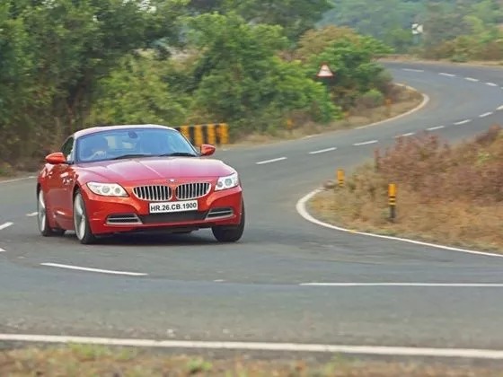
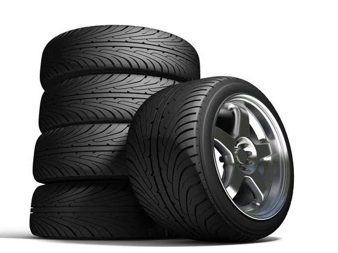

FAQs
Changing a car's tyre may be the difference between a safe journey and an ill-fated one. Even well maintained tyres need to be replaced. Read on to know more.
Tyres, as with most perishable components in any automobile are often underestimated and overlooked. Even someone who is fond of their car and enjoy motoring might check radiator fluids and oil levels on a weekly basis, but tyres apart from the occasional air pressure check are often neglected. Taking care of your tyres is often as important as taking care of your car. While wheel balancing, alignment and tyre rotating can help reduce tyre wear in general, every tyre still needs to be replaced after a certain time. Here are some indications that will tell you when you need a replacement.
Tread Depth:
Tyres that appear visually worn are mostly required to be replaced. Modern car tyres come with tyre wear indicators, which can give an educated user an immediate indication. One can also apply the more novices ‘One Rupee Test’ which help you know if your tyre needs replacing. Here is a step-by-step guide of the same:
Step 1: Take a one-rupee coin and put it in each groove of the tread. This will give you a quick estimate of the tread depth by judging how deep the coin goes.
Step 2:Repeat this process for all tyres and see how deep the coin goes in every tyre.
If your tread depth is the same in each groove of the tyre and between all tyres, there is nothing to worry about. However, in case there is considerable difference in the tread depth, then it’s a sign that your car is eating away rubber in that tyre. The best remedy to this is to get the alignment and balancing done to check if the camber, castor and toe are correct.
As per CMVR (Central Motor Vehicle Rules) 1989, Non Skid Depth (Remaining Tread Depth) should not be less than 1.6mm although this rule is not strictly enforced in each part of India as strongly as it is in most parts of America or Europe.
Wheel Alignment And Balancing:
If you do have irregular wear on one or more tyres it might usually be due to a misalignment of some sort in the suspension geometry. Irregular tyre wear and tear happens mostly due to driving on bad roads and the best way to reduce it is by getting the wheel alignment and balancing checked periodically (as mentioned in the owners’ manual of the car. If owner’s manual is not available, can be done every 5000kms) or when you notice the car is not able to maintain a straight line. However, even if a regular interval wheel alignment and balancing still makes your car wonder on the road, it usually means that the tyres need replacing. Irregular wear can also happen due to frequent driving on hills. That said, as we mentioned earlier, this can also be caused if there is either suspension or axle damage. Get a thorough checking done by an authorised dealership or a mechanic you trust.
Tyre Grip: One of the easiest ways to know that your tyres are due for a change is when they appear to run out of grip much earlier than what you have been used. Another factor that signals irregular wear and tear of the tyre is when you feel a change while stopping the car. Three wheeled brakes is a sure shot signal that the tyre wear and tear is irregular.
Three wheeled brakes happen primarily in two scenarios: when there is irregular tread wear from one of the tyres and when there's a problem in the brake hub of that particular wheel. Other instance where one can immediately make out if he or she needs to change their tyres is under high speed cornering. If one feels the car start to slide or become twitchy all of a sudden means one or more tyres have started to give way.
All said and done, even well maintained tyres have a shelf life of about 50,000kms or 5 years till they start showing sure shot signs of wear. Always change all four tyres on your car and keep the best one from your older set as the spare. In case you do travel on highways extensively, it is a good idea to keep a second spare as well. Filling your car’s tyres with nitrogen instead of air will also help in maintaining the integrity of your tyre for longer. Also, always remember to buy a reputed brand instead of a cheaper foreign alternative, even if it means shelling some more money. At the end of the day, the tyres are the only thing that keeps your car on the road, in turn ensuring you and your family’s safety.
Not replacing your tyres on time can be potentially hazardous in a number of ways. Worn out tyres have a much larger chance of picking up stray punctures due to the sheer lack of tread material in the tyre itself. Tyres with worn out treads also greatly reduce your car’s stopping potential on wet condition. For example, a worn out tyre would take almost 70% more in terms of distance to come to a complete stop as compared to a new or well-maintained tyre.
Worn out tyres are also hazardous if driven on wet or uneven surfaces. The tread in a tyre is what dissipates water or other forms of liquid from the road, thereby allowing the maximum contact patch on the road, which in turn leads to grip. A won out tyre won’t be able to dissipate enough or any water, which in most cases will lead to instances of aquaplaning. Aquaplaning can make your car lunge out of control in a split second leading to a potentially dangerous accident. It is imperative then to double-check your tyres around the month of May or just before the annual monsoon season begins.
Many times only two tyres are worn and other two tyres have some tread left and customer wants to change only 2 worn tyres. In such case, it is better to put the new tyres in rear, especially before or during monsoon season. Putting worn tyres in rear results in oversteer during wet cornering and may result in losing control over steering.
Modern pneumatic tyres are made using natural rubber, synthetic rubber, fabric, steel wires and carbon black. Many tyres also include synthetic chemicals such as silica to enhance various features. Tyres usually consist of a tread pattern and a body (Carcass). While the tread is responsible for traction, the Carcass forms the basic structure that contains air.
Tyres can be segmented on the basis of following categories:
On the basis of construction
Cross Ply or Bias Ply
The CASING is composed of several CRISS CROSS textile plies, running from bead to bead, at an angle to the rolling direction.
The TREAD is not stabilized.
The TREAD and SIDEWALLS are formed by the same ply structure.
When rolling, the TREAD is subjected to flexing and this causes:
- Deformation of the tread in foot print area on the ground
- Friction with the ground
- Pantographic movement between casing plies like a scissor
This Results in::
- Accelerated wear
- Less grip due to lower foot print area on the ground
- Less road holding, as TREAD is not stabilized
- Increase in fuel consumption
- Heat buildup, due to pantographic movement (scissoring effect) between casing plies
Radial Tyres
The CASING is composed of one single steel ply, running from bead to bead, at 90° to the rolling direction.
The Tread is stabilized by a belt made up of several steel plies.
The Tread and Side Walls function independently.
When rolling, the TREAD is not affected by any flexing and this helps in:
- Less Deformation of the tread in foot print area on the ground
- Less Friction with the ground
- No Pantographic movement as there is only one steel casing ply.
This Results in:
- Increased Tread Life
- Excellent Road Grip
- Better road holding & precise driving control due to stabilized tread
- Increase fuel efficiency
- Cooler running as there is no pantographic movement (scissoring effect) between casing plies & no tread friction with the ground.
On the basis of tread pattern
Summer Tyres
These tyres are specially designed to offer optimum performance in summers. They come equipped with a block shaped tread pattern for dry and wet grip. The rubber compound also offers good thermal resistance for improved tyre life.
Winter Tyres
These tyres with deep grooves and blocky tread pattern to offer good grip over snow and ice. The pattern is optimized to offer a 'biting-effect' for improved braking over snow. These tyres have an innovative compound that keeps the tyres warm for better traction.
All Season Tyres
As the name suggests, these tyres offer good year-round performance but they may not perform ably over excessively wet track or at in extreme temperatures.
All Terrain tyres
These tyres are suitable for on-road as well as off-road use. They come equipped with a special tread pattern with large lugs to offer confident over rough and unpaved roads alongside good traction over highways. They also offer long tyre life.
Performance oriented
These tyres are specially designed to offer high performance. They offer superior wet and dry traction along with precise handling and effective braking. Since they are made up of soft rubber compound, the tread life on these tyres isn't very high.

Example- 185/65/R 16 91V :
185 – This part represents the cross sectional width of tyre in mm.
65 – This part represents the aspect ratio of the profile in mm. 65 would mean that the sidewall heightof the tyre is 65% of the width of the tyre i.e 65% of 185mm.
R – This part represents the construction type of the tyre. ' R ' signifies a Radial construction
16 – It represents Rim diameter ( wheel height ).
91 – This part represents the Loading Index of the tyre, which is the maximum load bearing capacity of the tyre ( in kgs ). 91 means that the tyre is capable of bearing a load of up to 615 kgs.
V – This part is indicative of the Speed Index i.e the maximum speed the tyre can achieve without getting damaged. V means a speed rating of maximum 240 km/h.
For best all-round performance, it is not recommended to mix tyre brands. This is because every brand would have different construction techniques, would incorporate different technologies and the tyres would have different wearing stages. It is recommended to have all tyres of same brand and specifications.
In order to achieve best all-round performance, it is highly recommended to have all tyres identical to each other in terms of brand, tread pattern, dimension, loading index and speed rating and construction type.
In fact, it is strictly recommended to have all 4 running tyres of exact same size (unless & until specified by the vehicle manufacturer) and of same construction type i.e. all 4 radial or all 4 bias ply type.
For a proper handling and ride comfort, it is recommended to have all tyres of same type i.e all tubeless or all of tube type.
Run Flat tyres have reinforced sidewalls which help you drive your vehicle for a good number of miles, at a reasonable speed, in case of a puncture.
Optimum air pressure for tyres is always suggested by the vehicle manufacturer. It is usually mentioned across the inside of the front doors or B-pillar, as well as on the vehicle manual.
The manufacturing date is actually printed on the tyre sidewall in the form of a DOT number. The last 4 numbers of the DOT represent the manufacturing week and year. If the last 4 digits of DOT are 1217, then it means the tyre was manufactured in the 12th week of 2017.
While it is recommended to replace all 4 tyres for optimum safety and traction, yet, if you are replacing only 2 tyres then it is better to have them installed on the rear axle. This is because over wet or slippery surface, worn-out rear tyres could put your vehicle in a ' fish tail ' slide and retrieving control through steering wheel may not be possible.
Tyre valves have a rubber base which could get brittle with time. Also, the valve stem may become weak with time. So, it is recommended to replace the tyre valves every time you replace a tyre. This will prevent any unwanted air leakage. .
One of the ways of saving fuel is by keeping the tyres of your vehicle properly inflated.Under-inflated tyres require more energy to be brought into rotation, hence, more fuel consumption. Keeping people’s requirement in mind, Ceat has come up with a fuel efficient tyre- Fuelsmarrt tyre.
Proper maintenance of tyres would not only enhance the tyre life, but would also help them resist punctures, offer superior performance and a comfortable and quiet ride quality. Following are the ways to take good care of your tyres: Maintaining optimum tyre pressure Proper wheel alignment Proper wheel balancing Regular tyre rotation Regularly checking for cuts, abrasions etc. Do not exceed the loading index
Wheel alignment ensures proper handling of the vehicle and even tread-wear. A vehicle is said to be properly aligned when all the suspension and steering components are functioning soundly and wheel assemblies are running straight and true. Signs that stress towards wheel alignment include uneven tread wear, changed steering response and vehicle pulling to one side.
Improper wheel balancing is caused by uneven weight distribution on the wheels. This leads to uneven ro tation of tyres, thus, resulting in annoying vibration, tyre wobbling and uneven tread wearing. Wheel balancing ensures that the correct weights are added to the tyre rims to balance them and provide a smooth ride quality. It is important to get the wheels balanced every time you get new tyres fitted.
Tyre rotation is the practice of moving the tyres of a car from one position to another in order to ensure even tread-wear. Tyres on one axle can wear faster than those on the other one due to different driving habits, frequent braking or uneven weight distribution. In order to ensure even wearing of all 4 tyres, it is recommended to practice tyre-rotation between axles after every 5000 kms.
Keeping an optimum air pressure is one of the easiest and most effective ways of taking proper care of the tyres. It offers following benefits: Safety Under/Over inflated tyres are usually one of the most prominent reasons for tyre blow-outs. Since they do not offer an optimized contact patch with the tarmac the braking efficiency of the vehicle decreases. Tyre Life Appropriate air pressure ensures a uniform contact patch with the tarmac. This helps in providing optimum performance and leads to uniform wearing, thus, enhancing tyre tread life. Economy Under / Over inflated tyres require more power to be brought into motion, and thus consume more fuel. Handling Tyres with correct pressure ensure precise handling and steering response. Confident grip Tyres with correct air pressure offer confident wet and dry grip as they grip the tarmac well.
Nitrogen is an inert gas and its chemical nature keeps it non-reactive. Hence, it does not exhibit any changes in property with change in temperature range. So, a tyre inflated with nitrogen is less likely to deflate quickly due to low permeability of the gas. Also, it helps in keeping the tyre cool, especially over long highway runs.
Tyres usually have a shelf life of about 5 years. With time, they get exposed to variable temperatures and UV-rays. This creates micro-cracks on the tread and sidewall. Such a tyre, when used, can cause frequent punctures and blow-outs. So, it is important to use the spare tyre as a regular tyre with proper tyre rotations. If not, then the spare tyre, even if unused, must be replaced after 5 years.
A bulge or bubble in the tyre sidewall is sometimes a result of damage from coming in contact with curb, a pothole or some other object. It could also be caused by a faulty tyre construction. Such a damage is usually irreparable and requires tyre change. However, it is best to have the tyre inspected by an authorized tyre outlet.
While flat tyre is usually a resultant of driving on rough surfaces or tyre being pierced by a sharp object, yet, poor maintenance of the tyre can also result in frequent punctures. In order to solve this, it is important to keep the tyres properly inflated. Under inflated tyres usually fail often. Also, using tyres that are older than 4-5 years can cause frequent tyre punctures. Ceat has launched its range of Puncture-safe tyres, which come lined with a special sealant to prevent punctures.
While it is recommended to replace all 4 tyres for optimum safety and traction, yet, it is okay to replace at least 2 tyres. It is better to install new two tyres on the rear axle.
Tyres usually make noise as a result of uneven or irregular tread wear. This could be caused because of improper wheel balancing or improper wheel alignment. It is best that you get the tyres inspected at an authorized CEAT outlet.
Vibration is usually caused because of improperly balanced wheels. It requires an immediate attention. If the vibration persists even after proper balancing, then the fault could pertain to faulty steering or suspension system.
This is a classic symptom that your vehicle requires proper wheel alignment.
Definitely! The type of tyre and tread pattern you choose is widely affected by your driving style. People with an aggressive and more spirited style of driving should go for high performance tyres as such tyres offer good braking efficiency and superior handling. Similarly, those strictly driving over highways and well paved roads should opt for Highway terrain tyres as these offer a comfortable, quiet and safe ride.
Tyre selection mainly based on the following factors Vehicle type Application / Use Tyre Rim Combinations Speed and driving conditions Type of Tread design and Wheel Position Load
It is not mandatory to stick to the OE fitted tyre. You can always opt for tyres which are more suited to your requirements. However, kindly ensure that you buy tyres with size and Specification that is compatible with your vehicle.
It is highly recommended that you purchase tyre from authorised CEAT dealer.
Tyre upsizing is a practice of replacing a tyre with a wider one with lower profile and keep the diameter difference within a permissible range with respect to the OE fitted tyre. Tyre upsizing usually results in better road grip and high speed stability. Benefits of upsizing Improved traction and cornering grip Improved stability Improved steering response Improved aesthetics Demerits of upsizing Increased chances of tyre and rim damage by road hazards Increased cost of tyres and rims Insurance Company approval required Increased likelihood of contact with wheel arches
CEAT's Largest Business Partner Worldwide